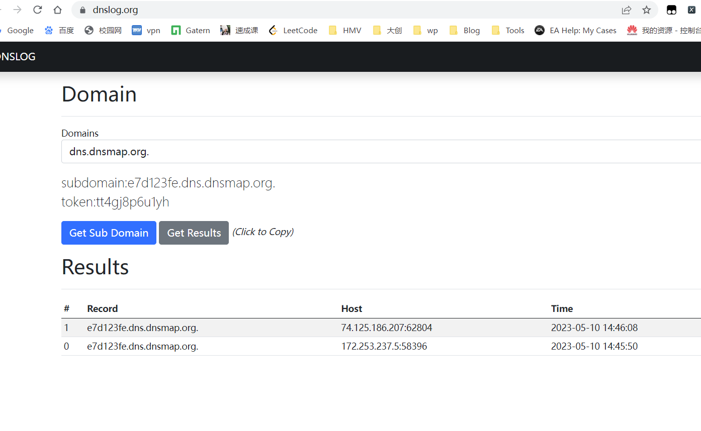

Java安全初步+CC1
反射
forName获取类的⽅法
newInstance实例化类对象的⽅法
getMethod获取函数的⽅法
invoke执行函数的⽅法
class.newInstance()的作用就是调用这个类的无参构造函数，
- 使用
newInstance总是不成功原因： 1. 你使用的类没有无参构造函数 2. 你使用的类构造函数是私有的比如Runtime
获取一个”类”(java.lang.Class )的方式
1 | obj.getClass() 如果上下⽂中存在某个类的实例 obj ，那么我们可以直接通过 |
⽤反射的⼀⼤⽬的，就是绕过某些沙盒。⽐如，上下⽂中如果只有Integer类型的 数字，我们如何获取到可以执⾏命令的Runtime类呢？也许可以这样（伪代 码）： 1.getClass().forName("java.lang.Runtime")
forName
除了系统类，如果我们想拿到一个类，需要先 import 才能使用。而使用forName就不需要，这样对于我们的攻击者来说就十分有利，我们可以加载任意类。
Java的普通类 C1 中支持编写内部类 C2 ，而在编译的时候，会生成两个文件： C1.class 和C1$C2.class，我们可以把他们看作两个无关的类，通过Class.forName("C1$C2") 即可加载这个内部类。
类的初始化：
forName函数的两个重载
Class.forName(className) // 等于
Class.forName(className, true, currentLoader)
Java默认的 ClassLoader 就是根据类名来加载类， 这个类名是类完整路径，如 java.lang.Runtime
第二个参数就是是否初始化
1 | public class TrainPrint { |
⾸先调⽤的是 static {} ，其次是 {} ，最后是构造函数。 其中， static {} 就是在“类初始化”的时候调⽤的，⽽ {} 中的代码会放在构造函数的 super() 后⾯， 但在当前构造函数内容的前⾯。 所以说， forName 中的 initialize=true 其实就是告诉Java虚拟机是否执⾏”类初始化“。
ex:假设我们有如下函数，其中函数的参数name可控：
1 | public void ref(String name) throws Exception { |
我们就可以编写⼀个恶意类，将恶意代码放置在 static {} 中。
Runtime类就是单例模式，我们只能通过 Runtime.getRuntime() 来获取到Runtime对 象。
1 | Class clazz = Class.forName("java.lang.Runtime"); |
getMethod 的作用是通过反射获取一个类的某个特定的公有方法。
调用 getMethod 的时候，我们需要传给他你需要获取的函数的参数类型列表。这个类型得自己知道
invoke 的作用是执行方法，它的第一个参数是： 如果这个方法是一个普通方法，那么第一个参数是类对象 如果这个方法是一个静态方法，那么第一个参数是类 我们正常执行方法是 [1].method([2], [3], [4]…) ，其实在反射里就是 method.invoke([1], [2], [3], [4]…)
1 | Class clazz = Class.forName("java.lang.Runtime"); |
getConstructor 和getMethod类似，
getConstructor 接收的参数是构造函数列表类型，因为构造函数也支持重载， 所以必须用参数列表类型才能唯一确定一个构造函数。 获取到构造函数后，我们使用 newInstance 来执行
1 | Class clazz = Class.forName("java.lang.ProcessBuilder"); |
ProcessBuilder有两个构造函数：
public ProcessBuilder(List command)
public ProcessBuilder(String… command)
我上面用到了第一个形式的构造函数，所以我在 getConstructor 的时候传入的是 List.class 。
Payload用到了Java里的强制类型转换，有时候我们利用漏洞的时候（在表达式上下文中）是没有这种语法的。
所以，仍需利用反射来完成这一步。
通过 getMethod("start") 获取到start方法，然后 invoke 执行， invoke 的第一个参数就是 ProcessBuilder Object了。
1 | Class clazz = Class.forName("java.lang.ProcessBuilder"); |
如果我们要使用public ProcessBuilder(String... command)这个构造函数
又涉及到Java里的可变长参数（varargs）了。
正如其他语言一样，Java也支持可变长参数，就是当你 定义函数的时候不确定参数数量的时候，可以使用 … 这样的语法来表示“这个函数的参数个数是可变 的”。 对于可变长参数，Java其实在编译的时候会编译成一个数组，也就是说，如下这两种写法在底层是等价 的（也就不能重载）：
1 | public void hello(String[] names) {} |
那么对于反射来说，如果要获取的目标函数里包含可变长参数，其实我们认为它是数组就行了。
所以，我们将字符串数组的类 String[].class 传给 getConstructor ，获取 ProcessBuilder 的第二
种构造函数
Class clazz = Class.forName(“java.lang.ProcessBuilder”);
clazz.getConstructor(String[].class)
在调用 newInstance 的时候，因为这个函数本身接收的是一个可变长参数，我们传给
ProcessBuilder 的也是一个可变长参数，二者叠加为一个二维数组，所以整个Payload如下：
1 | Class clazz = Class.forName("java.lang.ProcessBuilder"); |
全反射写法
1 | Class clazz1 = Class.forName("java.lang.ProcessBuilder"); |
declared系列
与普通的 getMethod 、 getConstructor 区别是：
1 | getMethod 系列方法获取的是当前类中所有公共方法，包括从父类继承的方法 |
个人感觉区别就是 不包含继承来的就是
而getConstructor 接收的参数是构造函数列表类型
Runtime这个类的构造函数是私有的，我们需要用 Runtime.getRuntime() 来 获取对象。其实现在我们也可以直接用 getDeclaredConstructor 来获取这个私有的构造方法来实例 化对象，进而执行命令：
setAccessible ，这个是必须的。我们在获取到一个私有方法后，必须用 setAccessible 修改它的作用域，否则仍然不能调用。
1 | Class clazz = Class.forName("java.lang.Runtime"); |
RMI
远程方法调用 通过 java实现的RPC
https://www.cnblogs.com/nice0e3/p/14280278.html
一个RMI过程有以下三个参与者：
RMI Registry
RMI Server
RMI Client
Java对远程访问RMI Registry做了限制，只有来源地址是localhost的时候，才能调用rebind、 bind、unbind等方法。 不过list和lookup方法可以远程调用。 list方法可以列出目标上所有绑定的对象：
lookup作用就是获得某个远程对象。
RMI利用codebase执行任意代码
RMI中也存在远程加载的场景，也会涉及到codebase。
codebase是一个地址，告诉Java虚拟机我们应该从哪个地方去搜索类，有点像我们日常用的 CLASSPATH，但CLASSPATH是本地路径，而codebase通常是远程URL，比如http、ftp等。
如果我们指定 codebase=http://example.com/ ，然后加载 org.vulhub.example.Example 类，则 Java虚拟机会下载这个文件 http://example.com/org/vulhub/example/Example.class ，并作为 Example类的字节码。
RMI的流程中，客户端和服务端之间传递的是一些序列化后的对象，这些对象在反序列化时，就会去寻找类。如果某一端反序列化时发现一个对象，那么就会去自己的CLASSPATH下寻找想对应的类；如果在 本地没有找到这个类，就会去远程加载codebase中的类。
如果codebase被控制，就可以加载恶意类，在RMI中，我们是可以将codebase随着序列化数据一起传输的，服务器在接收到这个数据后就会去 CLASSPATH和指定的codebase寻找类，由于codebase被控制导致任意命令执行漏洞。
只有满足如下条件的RMI服务器才能被攻击：
条件较苛刻
安装并配置了SecurityManager
Java版本低于7u21、6u45，或者设置了 java.rmi.server.useCodebaseOnly=false
官方将 java.rmi.server.useCodebaseOnly 的默认值由 false 改为了 true 。在 java.rmi.server.useCodebaseOnly 配置为 true 的情况下，Java虚拟机将只信任预先配置好的 codebase ，不再支持从RMI请求中获取。
0xaced开头 java序列化数据
codebase 是通过 [Ljava.rmi.server.ObjID; 的 classAnnotations 传递的
即使没有RMI的客户端，只需要修改 classAnnotations 的值，就能控制codebase，使其 指向攻击者的恶意网站。
classAnnotations
在序列化Java类的时候用到了一个类，叫 ObjectOutputStream 。这个类内部有一个方法 annotateClass ， ObjectOutputStream 的子类有需要向序列化后的数据里放任何内容，都可以重写 这个方法，写入你自己想要写入的数据。然后反序列化时，就可以读取到这个信息并使用
分析序列化数据时看到的 classAnnotations ，实际上就是 annotateClass 方法写入的 内容
yoserial
yoserial:可以让⽤户根据⾃⼰选择的利⽤链，⽣成反 序列化利⽤数据，通过将这些数据发送给⽬标，从⽽执⾏⽤户预先定义的命令。
什么是利⽤链？ 利⽤链也叫“gadget chains”，我们通常称为gadget。可以将 gadget理解为⼀种⽅法，它连接的是从触发位置开始到执⾏命令的位置结束，在PHP⾥可能 是 __desctruct 到 eval ；如果你没学过其他语⾔的反序列化漏洞，那么gadget就是⼀种⽣成POC的⽅法罢了
java -jar ysoserial-master-30099844c6-1.jar CommonsCollections1 "id"
URLDNS
URLDNS 就是ysoserial中⼀个利⽤链的名字，但准确来说，这个其实不能称作“利⽤链”。因为其参数不 是⼀个可以“利⽤”的命令，⽽仅为⼀个URL，其能触发的结果也不是命令执⾏，⽽是⼀次DNS请求。
⾮常适合我们在检测反序列化漏洞时 使⽤：
- 使⽤Java内置的类构造，对第三⽅库没有依赖
- 在⽬标没有回显的时候，能够通过DNS请求得知是否存在反序列化漏洞
代码层分析
yoserial中 URLDNS代码
1 | public class URLDNS implements ObjectPayload<Object> { |
看到return ht就是得到的payload
ht来自于实例化HashMap()
触发反序列化的⽅法是 readObject
因为Java开发者（包括Java内置库的开发者）经 常会在这⾥⾯写⾃⼰的逻辑，所以导致可以构造利⽤链。
Hashmap()->readObject：
1 | private void readObject(java.io.ObjectInputStream s) |
putVal(hash(key), key, value, false, false);调用putVal
hash ⽅法调⽤了key的hashCode()⽅法：
1 | static final int hash(Object key) { |
根据 readobject中的代码得知 key是从序列化串中读出来的 也就是被传入的
就得
回到yos中看到 在序列化之前 怎么会是
1 | URL u = new URL(null, url, handler); // URL to use as the Key |
因为u是new的url u是key 所以key.hasncode就得看url.java
1 | public synchronized int hashCode() { |
找到的是 handler.hashcode()
handler 是 URLStreamHandler 对象（的某个⼦类对象），继续跟进其 hashCode ⽅法：
1 | protected int hashCode(URL u) { |
发现 getHostAddress
1 | protected synchronized InetAddress getHostAddress(URL u) { |
这⾥ InetAddress.getByName(host) 的作⽤是根据主机名，获取其IP地址，在⽹络上其实就是⼀次 DNS查询。到这⾥就不必要再跟了
要构造这个Gadget，只需要初始化⼀个 java.net.URL 对象，作为 key 放在 java.util.HashMap 中；
然后，设置这个 URL 对象的 hashCode 为初始值 -1 ，这样反序列化时将会重新计算 其 hashCode ，才能触发到后⾯的DNS请求，否则不会调⽤ URL->hashCode() 。
另外，ysoserial为了防⽌在⽣成Payload的时候也执⾏了URL请求和DNS查询，所以重写了⼀ 个 SilentURLStreamHandler 类，这不是必须的。
复现
获取dns解析地址 http://e7d123fe.dns.dnsmap.org
编写入口
1 | import java.io.FileInputStream; |

这个方法，就是将主机名转换为IP地址，也就是发起了一次DNS解析请求。
总结一下整个利用链：
HashMap.readObject()HashMap.putVal()HashMap.hash()URL.hashCode()URLStreamHandler.hashCode()URLStreamHandler.getHostAddress()
URLDNS中存在ht.put,里面也存在key.hashCode()没啥没有触发DNS解析？
因为在序列化时，重写了URLStreamHander，将getHostAddress置空。
为啥要用反射将hashCode初始值置-1
设置这个 URL 对象的 hashCode 为初始值 -1 ，这样反序列化时将会重新计算其 hashCode ，才能触发到后⾯的DNS请求，否则不会调⽤ URL->hashCode() 。
CommomCollections1
TransformedMap链子
完整POC
1 | import org.apache.commons.collections.Transformer; |
P神简化版demo
1 | public class CommonCollections1 { |
TransformedMap
⽤于对Java标准数据结构Map做⼀个修饰，被修饰过的Map在添加新的元素时，将可 以执⾏⼀个回调。我们通过下⾯这⾏代码对innerMap进⾏修饰，传出的outerMap即是修饰后的Map：
1 | Map outerMap = TransformedMap.decorate(innerMap, keyTransformer,valueTransformer); |
其中，keyTransformer是处理新元素的Key的回调，valueTransformer是处理新元素的value的回调。 我们这⾥所说的”回调“，并不是传统意义上的⼀个回调函数，⽽是⼀个实现了Transformer接⼝的类
ep;
1 | Map<String, String> map = new HashMap<>(); |
Transformer
Transformer是⼀个接⼝，它只有⼀个待实现的⽅法：
1 | public interface Transformer { |
TransformedMap在转换Map的新元素时，就会调⽤transform⽅法，这个过程就类似在调⽤⼀个”回调 函数“，这个回调的参数是原始对象。
接收一个对象，然后对对象作一些操作并输出)
ConstantTransformer
是实现了Transformer接⼝的⼀个类，它的过程就是在构造函数的时候传⼊⼀个 对象，并在transform⽅法将这个对象再返回：
1 | public ConstantTransformer(Object constantToReturn) { |
所以他的作⽤其实就是包装任意⼀个对象，在执⾏回调时返回这个对象，进⽽⽅便后续操作。
接受一个对象返回一个常量，无论接收什么对象都返回 iConstant(常量)
InvokerTransformer
实现了Transformer接⼝的⼀个类，这个类可以⽤来执⾏任意⽅法，这也是反序 列化能执⾏任意代码的关键。
在实例化这个InvokerTransformer时，需要传⼊三个参数，第⼀个参数是待执⾏的⽅法名，第⼆个参数 是这个函数的参数列表的参数类型，第三个参数是传给这个函数的参数列表：
1 | public InvokerTransformer(String methodName, Class[] paramTypes, Object[] args) { |
后⾯的回调transform⽅法，就是执⾏了input对象的iMethodName⽅法：
1 | public Object transform(Object input) { |
传入一个对象，然后反射调用。方法值，参数类型，参数都是可控的
ChainedTransformer
也是实现了Transformer接⼝的⼀个类，它的作⽤是将内部的多个Transformer串 在⼀起。通俗来说就是，前⼀个回调返回的结果，作为后⼀个回调的参数传⼊，我们画⼀个图做示意：
1 | public ChainedTransformer(Transformer[] transformers) { |
当传⼊的参数是⼀个数组的时候，就开始循环读取，对每个参数调⽤ transform ⽅法,从⽽构造出 ⼀条链。
理解demo
1 | Transformer[] transformers = new Transformer[]{ |
创建了⼀个ChainedTransformer，其中包含两个Transformer：
第⼀个是ConstantTransformer， 直接返回当前环境的Runtime对象；
第⼆个是InvokerTransformer，执⾏Runtime对象的exec⽅法，参数是 calc。
当然，这个transformerChain只是⼀系列回调，我们需要⽤其来包装innerMap，使⽤的前⾯说到的 TransformedMap.decorate ：
1 | 当然，这个transformerChain只是⼀系列回调，我们需要⽤其来包装innerMap，使⽤的前⾯说到的 |
最后，怎么触发回调呢？就是向Map中放⼊⼀个新的元素：
1 | outerMap.put("test", "xxxx"); |
代码执⾏demo，它只是⼀个⽤来在本地测试的类。在实际反序列化漏洞中，我们需要将最终⽣成的outerMap对象变成⼀个序列化流 ⼀个demo离⼀个真正可利⽤的POC还有很⼤的距离
AnnotationInvocationHandler
触发这个漏洞的核⼼，在于我们需要向Map中加⼊⼀个新的元素。
在demo中，我们可 以⼿⼯执⾏outerMap.put("test", "xxxx");来触发漏洞，但在实际反序列化时，我们需要找到⼀ 个类，它在反序列化的readObject逻辑⾥有类似的写⼊操作
这个类就是 sun.reflect.annotation.AnnotationInvocationHandler ，我们查看它的readObject ⽅法
1 | private void readObject(java.io.ObjectInputStream s) |
核⼼逻辑就是 Map.Entry memberValue : memberValues.entrySet() 和 memberValue.setValue(...) 。
memberValues就是反序列化后得到的Map，也是经过了TransformedMap修饰的对象，这⾥遍历了它 的所有元素，并依次设置值。
在调⽤setValue设置值的时候就会触发TransformedMap⾥注册的 Transform，进⽽执⾏我们为其精⼼设计的任意代码。
所以，我们构造POC的时候，就需要创建⼀个AnnotationInvocationHandler对象，并将前⾯构造的 HashMap设置进来：
1 | Class clazz = |
这⾥因为sun.reflect.annotation.AnnotationInvocationHandler是⼀个内部类，不能直接使⽤ new来实例化。我使⽤反射获取到了它的构造⽅法，并将其设置成外部可⻅的，再调⽤就可以实例化 了。
AnnotationInvocationHandler类的构造函数有两个参数，第⼀个参数是⼀个Annotation类；第⼆个是 参数就是前⾯构造的Map。
我们构造了⼀个AnnotationInvocationHandler对象，它就是我们反序列化利⽤链的起点了。我 们通过如下代码将这个对象⽣成序列化流：
1 | ByteArrayOutputStream barr = new ByteArrayOutputStream(); |
在writeObject的时候出现异常了： java.io.NotSerializableException: java.lang.Runtime 。
原因是，Java中不是所有对象都⽀持序列化，待序列化的对象和所有它使⽤的内部属性对象，必须都实 现了java.io.Serializable接⼝。⽽我们最早传给ConstantTransformer的 是 Runtime.getRuntime() ，Runtime类是没有实现java.io.Serializable接⼝的，所以不允许被 序列化。
我们可以通过反射来获取到当前上下⽂中的Runtime对象，⽽不需要直接使⽤这个类：
1 | Method f = Runtime.class.getMethod("getRuntime"); |
转换成Transformer的写法
1 | Transformer[] transformers = new Transformer[] { |
最⼤的区别就是将 Runtime.getRuntime() 换成了 Runtime.class ，前者是⼀ 个 java.lang.Runtime 对象，后者是⼀个 java.lang.Class 对象。Class类有实现Serializable接⼝， 所以可以被序列化。
修改Transformer数组后再次运⾏，发现这次没有报异常，⽽且输出了序列化后的数据流，但是反序列 化时仍然没弹出计算器，这是为什么呢？
这个实际上和AnnotationInvocationHandler类的逻辑有关，我们可以动态调试就会发现， 在 AnnotationInvocationHandler:readObject 的逻辑中，有⼀个if语句对var7进⾏判断，只有在其 不是null的时候才会进⼊⾥⾯执⾏setValue，否则不会进⼊也就不会触发漏洞：
那么如何让这个var7不为null呢？这⼀块我就不详细分析了，还会涉及到Java注释相关的技术。
直接给 出两个条件：
- sun.reflect.annotation.AnnotationInvocationHandler 构造函数的第⼀个参数必须是 Annotation的⼦类，且其中必须含有⾄少⼀个⽅法，假设⽅法名是X
- 被 TransformedMap.decorate 修饰的Map中必须有⼀个键名为X的元素 所以，这也解释了为什么我前⾯⽤到 Retention.class ，因为Retention有⼀个⽅法，名为value；所 以，为了再满⾜第⼆个条件，我需要给Map中放⼊⼀个Key是value的元素：
1 | innerMap.put("value", "xxxx"); |
再次修改POC，我们在本地进⾏测试，发现已经可以成功弹出计算器了： 但是，当你兴冲冲地拿着这串序列化流，跑到服务器上进⾏反序列化时就会发现，⼜⽆法成功执⾏命令 了。这⼜是为什么呢？ 前⽂说了，我们是在Java 8u71以前的版本上进⾏测试的，
在8u71以后⼤概是2015年12⽉的时候，Java 官⽅修改了 sun.reflect.annotation.AnnotationInvocationHandler 的readObject函数：http:// hg.openjdk.java.net/jdk8u/jdk8u/jdk/rev/f8a528d0379d
改动后，不再直接 使⽤反序列化得到的Map对象，⽽是新建了⼀个LinkedHashMap对象，并将原来的键值添加进去。 所以，后续对Map的操作都是基于这个新的LinkedHashMap对象，⽽原来我们精⼼构造的Map不再执 ⾏set或put操作，也就不会触发RCE了。
一些思路
对于demo版本的exp来说 首先看的是TransformedMap
它是用来对Map类型数据做修饰的，当修饰之后的键或者值被修改之后，就会触发对应的回调方法。
链子是在transform方法里执行命令的，所以接下来找哪个类调用了transform方法。
右键点击查找用法可快速查找什么类调用了transform方法。共有二十四处调用，这些调用的地方我们都可以看看，但为了节约时间，我直接定位到TransformedMap类的checkSetValue方法
valueTransformer通过构造器赋值，但是函数类型为protected，只能本类调用。
该类找到decorate方法，类似于装饰器。它实例化了本类，能够调用TransformedMap构造器并为valueTransformer赋值。那么回到checkSetValue方法，我们已经可以控制valueTransformer，那么接下来找哪个类的哪个方法调用了该方法。
去TransformedMap的父类Ab看看
只有一处调用，MapEntry类的setValue方法。
Entry代表map中的一个键值对，实际上MapEntry类重写了Map的setValue方法，跟进AbstractMapEntryDecorator抽象类，
我们先通过对Map的遍历触发setValue方法，主要思路：实例化一个Map，put一个键值对，然后通过TransformedMap的decorate方法进行封装，最后进行遍历。
因此，EXP使用TransformedMap.decorate，修饰innerMap，得到修饰的结果outMap，只要outerMap的值发生了改变，就会触发transformerChain,从而触发RCE。
因此接下来的问题关键就到了如何改变outerMap的值
这里我们需要找到一个类，这给类具备在进行反序列化的readobject逻辑里有对Map数据类型的写入操作
这里找到的类就是sun.reflect.annotation.AnnotationInvocationHandler
查看它的反序列化方法：
1 | private void readObject(java.io.ObjectInputStream s) |
这里我们发现一个操作：
1 | for (Map.Entry<String, Object> memberValue :memberValues.entrySet()) { |
memberValues就是反序列化后得到的Map，如果它的值是我们前面TransformedMap修饰的对象，这⾥遍历了它的所有元素，并依次设置值。在调⽤setValue设置值的时候就会触发TransformedMap⾥注册的Transform，进⽽执⾏我们为其精⼼设计的任意代码
所以，我们构造POC的时候，就需要创建⼀个AnnotationInvocationHandler对象，并将前⾯构造的HashMap设置进来
这里我们需要注意”
sun.reflect.annotation.AnnotationInvocationHandler是一个内部类，不能直接使用new来实例化。我使用反射获取它的构造方法，并设置为外部可见，在调用就可以实例化了AnnotationInvocationHandler类的构造函数有两个参数，第⼀个参数是⼀个Annotation类；第⼆个是参数就是前⾯构造的Map
为啥Annotation使用Retention
P牛在文章中提到在反序列化时，有一个if语句对var7进行判断，只有其不是null的时候才会进入执行setValue，否则不会进入也就不会触发漏洞
var7不为null的条件：
sun.reflect.annotation.AnnotationInvocationHandler构造函数的第⼀个参数必须是Annotation的⼦类，且其中必须含有⾄少⼀个⽅法，假设⽅法名是X- 被 TransformedMap.decorate 修饰的Map中必须有⼀个键名为X的元素
所以，这解释了为什么前⾯⽤到 Retention.class ，因为Retention有⼀个⽅法，名为value；
所以，为了再满⾜第⼆个条件，需要给Map中放⼊⼀个Key是value的元素：
1 | innerMap.put("value", "xxxx"); |
为啥只有Java 8u71以前的版本可以触发
我们来看java 8u71以后的版本的AnnotationInvocationHandler:：readobject
1 | private void readObject(java.io.ObjectInputStream s) |
对比观察前后两个代码，我们不难发现，在22行，发生了较大改动，不再直接使⽤反序列化得到的Map对象，⽽是新建了⼀个LinkedHashMap对象，并将原来的键值添加进去。所以，后续对Map的操作都是基于这个新的LinkedHashMap对象，⽽原来我们精⼼构造的Map不再执⾏set或put操作，也就不会触发RCE了
为啥Transformer里面要使用反射，而不是直接调用
Java中不是所有对象都⽀持序列化，待序列化的对象和所有它使⽤的内部属性对象，必须都实现了java.io.Serializable接⼝。⽽我们最早传给ConstantTransformer的 是 Runtime.getRuntime() ，Runtime类是没有实现 java.io.Serializable 接⼝的，所以不允许被序列化当
使用反射的时候，就将Runtime.getRuntime() 换成了 Runtime.class ，前者是⼀个 java.lang.Runtime 对象，后者是⼀个 java.lang.Class 对象。Class类有实现Serializable接⼝，所以可以被序列化
个人的总结
TransformedMap中 checkSetValue 中 this.valueTransformer.transform(value); 回调了transform
->找valueTransformer 发现可控(protected只能本地方法调用 所以用decorate) 也就是 this.valueTransformer.transform(value);的value可控
-> 问题到了怎么才能触发checkSetValue 通过查找TransformedMap 的父类AbstractInputCheckedMapDecorator 找到的MapEntry中的value = this.parent.checkSetValue(value); （没啥屌用。主要是个思路）
->继续看看哪个类的哪个函数调用了setValue方法，如果是readObject类调用了那就再好不过了。
->找到AnnotationInvocationHandler类的readObject方法调用了setValue方法

Runtime类不能被反序列化->可以通过反射获取到它的class对象 嵌套在InvokeTransformer中
但 AnnotationInvocationHandler不能在包外实例化->需要反射来获得实例对象
需要满足readObject的两个if判断->
实际上这条链根本就没有调用setValue方法，打断点调试看看。
第一个if就进不去，这个memberType实际上就是获取注解对象名为name的值，这个name，就是memberValues的键名。而这个memberValues是什么呢？我们创建的Map对象，我们设置的Override，跟进看一下，

是没有值的，所以需要换一个注解，跟进Target看一下，
有value值，那就用它了。同时对于Map对象，需要put键值对，键名必须为value，键值随意。更改完成后，再跟进看一下
完全满足两个if条件判断。
setValue方法的参数不可控 (为啥非得用ConstatTransformer)
实际上执行了setValue方法后会跟进到checkSetValue
而这里的value不是我们想要的Runtime.class，也就是不可控。可以利用一个类ConstantTransformer，跟进看一下它的transform方法
无论接收什么参数，返回一个固定值，而这个固定值可以通过构造器可控。也就是说，无论value被赋上什么值，只要它调用了ConstantTransformer的transform方法，结果我们都可控。在Transformer数组里实例化ConstantTransformer
1 | new ConstantTransformer(Runtime.class) |
在数组遍历时会调用transform将输入改变为Runtime对象。
LazyMap类构建的链子
LazyMap和TransformedMap类似，都是来自于Common-Collection库，并继承AbstractMapDecorator。
LazyMap的漏洞触发点和TransformedMap唯一的差别是，Transformed Map是在写入元素的时候触发transform，而LazyMap是在其get方法中触发的factory.transform。其实这也是很好理解的，LazyMap的作用是”懒加载”，在get找不到值的时候，它会调用factory.transform方法去获取一个值：
1 | public Object get(Object key) { |
但是LazyMap的利用难度更高，因为sun.reflect.annotation.AnnotationInvocationHandler的readObject方法中并没有直接调用到Map的get方法。
所以ysoserial找到另一种方法，AnnotationInvocationHandler类的invoke方法有调用到get。
那么只要我们能够调用invoke，就能构建EXP这里使用的是Java的对象代理
Java对象代理
作为静态语言，如果想要劫持一个对象内部的方法调用，实现类似PHP的魔术方法__call，我们需要用到java.reflect.Proxy:
1 | Map proxyMap = (Map) Proxy.newProxyInstance(Map.class.getClassLoader(), new Class[] {Map.class}, handler); |
Proxy.newProxyInstance的第一个参数是ClassLoader，直接默认即可；第二个参数是我们需要代理的对象集合；第三个参数是一个实现了InvocationHandler接口的对象，里面包含了具体代理的逻辑。
这里可以写一个例子：
1 | import java.lang.reflect.InvocationHandler; |
ExampleInvocationHandler类实现了invoke方法，作用是监控到调用的方法名是get的时候，返回一个特殊字符串Hacked Object。
在外部调用这个ExampleInvocationHandler:
1 | import java.lang.reflect.InvocationHandler; |
同理sun.reflect.annotation.AnnotationInvocationHandler这个类实际上就是一个InvocationHandler，我们如果把这个对象用Proxy进行代理，那么在readObject的时候，只要调用任意方法，就会进入到AnnotationInvocationHandler#invoke方法中，进而触发我们的Lazy#get。
使用LazyMap构造利用链
修改POC，如下：
1 | import org.apache.commons.collections.Transformer; |
首先使用LazyMap替换TranformedMap
然后使用
proxy对象代理，代理sun.reflect.annotation.AnnotationInvocationHandler1
Map proxyMap = (Map) Proxy.newProxyInstance(Map.class.getClassLoader(), new Class[] {Map.class}, handler);
我们不能直接对其进行序列化，因为我们的入口点是
sun.reflect.annotation.AnnotationInvocationHandler#readObject，所以我们需要对AnnotationInvocationHandler对这个proxyMap进行包裹
LazyMap的缺点
和TransformedMap对比，LazyMap仍然无法解决CommonCollections1这条利用链在高版本java(8u71以后)中得到使用问题。
不能利用的主要原因和TransformedMap一样，二者都是继承sun.reflect.annotation.AnnotationInvocationHandler，它的readObject逻辑发生变化，上面的也提到过了。
个人的总结
LazyMapz中的this.factory.transform(key); 会调用重写transform
构造方法中写了factory的来源是 内容 可控 的
到这里要想的是咋触发 LazyMap的get方法
AnnotationInvocationHandler中 的invoke方法 中调用想要的map类的get方法，同时只需要在构造方法处传入LazyMap即可
涉及到上边说的代理类
和TransformedMap的区别也就是是在于后边这里了
个人反思
Java的饼要学 画 了很久 学的过程中 由于Java 基础很差 学的浑身难受 但是好久没有这种 纯粹的学知识的感觉了
这次只学了个 CC1 对一个连psvm都不知道的人 感觉提升还是有的
P神的安全漫谈和白日梦组长还有各种文章都
很受用 还有很多不懂的点继续整8.。
 wechat
wechat alipay
alipay